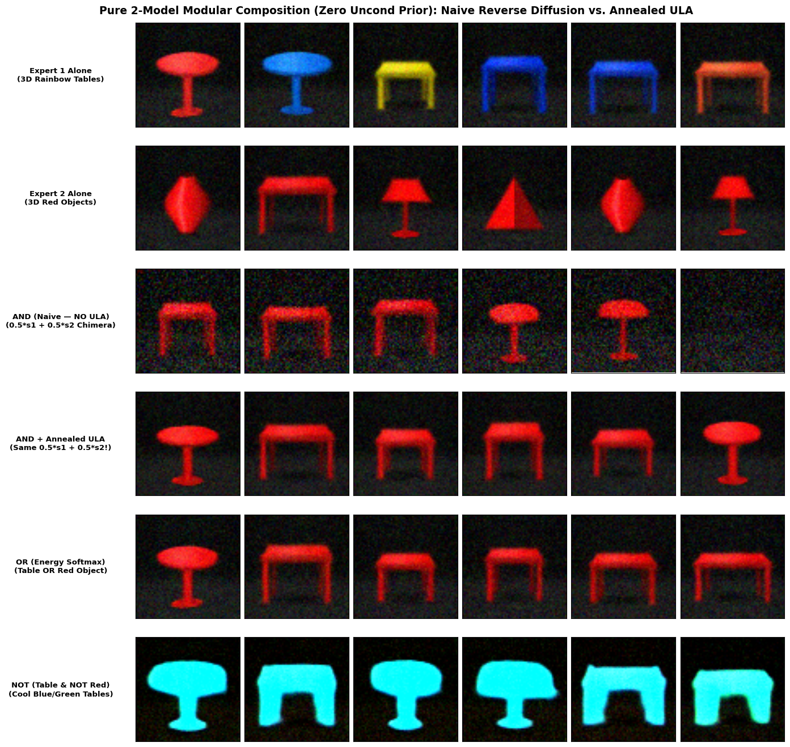
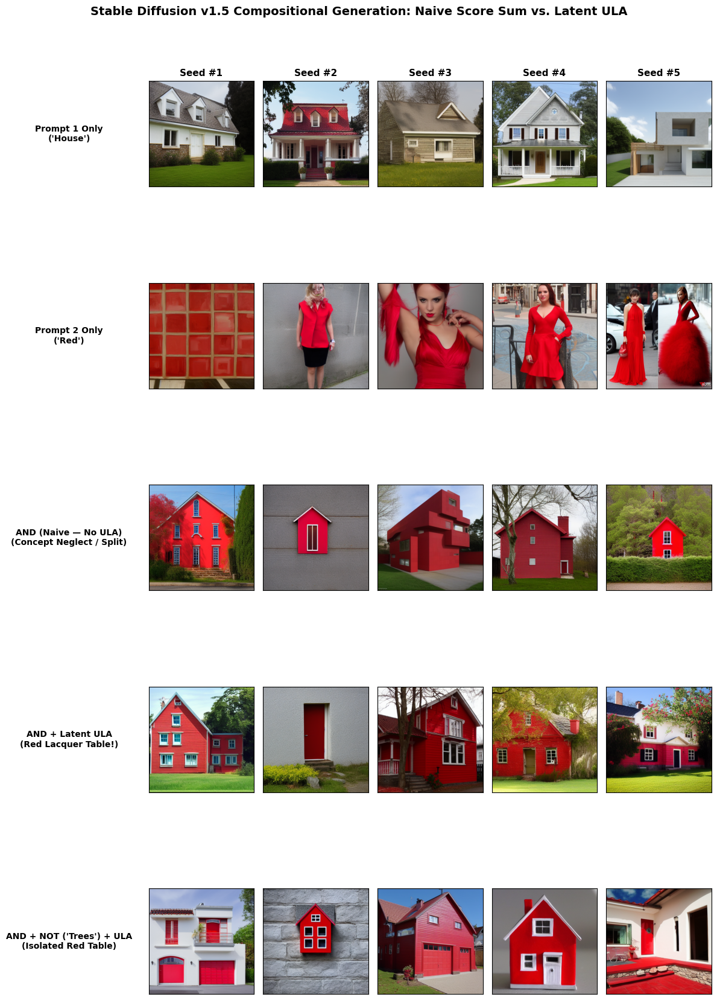
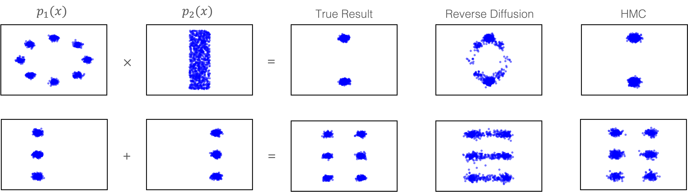
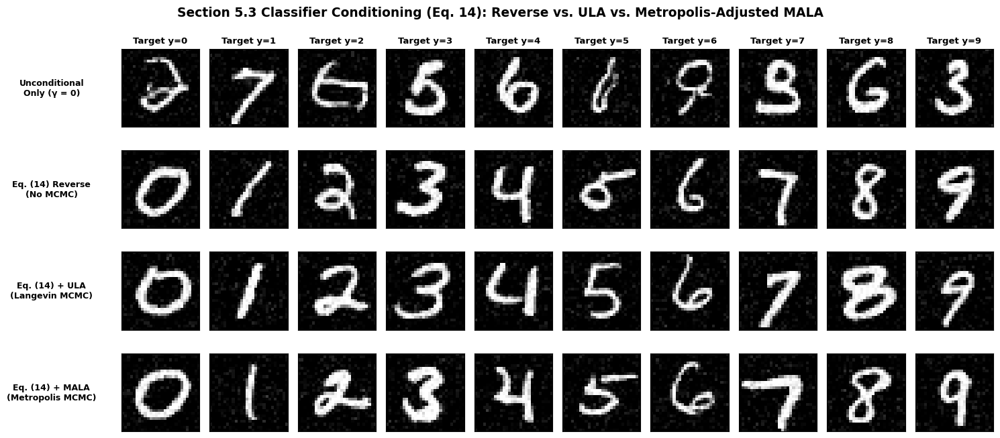

A paper, explained through an experiment
Diffusion model
composition
The paper, an exact Gaussian example, and three image experiments: modular composition, classifier conditioning and text-to-image generation.
Start the paper walkthrough

Samples from our supplied experiment grids
Compositional Generation with Energy-Based Diffusion Models and MCMC
Du et al., ICML 2023. Read the paper
01 / Motivation
Reusing what models already know
Suppose two trained models know different things. Can we combine their preferences without retraining them for every new request?
The paper's setting
Combine existing probabilistic models at generation time. The result is a new target density.
For example, combine a scene preference with an object preference.
Our small version
One expert knows tables in several colours. Another knows red objects.
Their intersection favours red tables. We also examine classifier conditioning and text prompts.
- Identify a sampling mismatch.A correct combination of scores can still be the wrong input to ordinary reverse diffusion.
- Sample intermediate targets with MCMC.Run updates at each noise level before moving to the next one.
- Learn an energy when density values are needed.This enables adjusted samplers and further composition rules.
Paper: Introduction and main contributions. The image experiments below are our adaptations.
02 / Background
What a diffusion expert learns
During training
- Draw a clean sample from that expert's data.
- Choose t and add the corresponding noise.
- Train a network to predict that noise.
Convert its prediction into a score estimate.
During generation
The trained expert takes the current x and noise level t, then returns a direction.
Its weights stay frozen while we compose and sample.
In 1D, this is the slope of log density. A positive score points right; a negative score points left.
The score gives local direction. It does not directly give the density value or a finished sample.
Paper: Sections 2.1–2.3. We use exact Gaussian scores first so learning error cannot explain the mismatch.
03 / Connection to guidance
Controlling what gets generated
An unconditional model generates any digit. A condition asks for a particular digit.
Classifier guidance
The generator supplies a data prior. A classifier trained on noisy images supplies a direction toward the requested label.
With exact, consistent models and λ = 1, Bayes' rule gives the conditional score.
Classifier-free guidance
Replace the classifier gradient with the difference between conditional and unconditional scores.
These predictions often come from one network, evaluated with and without the condition.
The paper asks how far model composition can go beyond this familiar form of guidance.
Paper: Section 2.4, Equations 6–7. Larger λ changes the target and can reduce diversity.
04 / Composition rules
AND, OR and NOT as densities
AND
Favour agreement. Its score is sA + sB.
OR
Include alternatives. Its score is not the simple average of expert scores.
A AND NOT B
Use A as the base and suppress B. Its score is sA − αsB.
These are soft density preferences. NOT is a ratio, and its integral must be finite. For mixtures of energy models, relative normalizing constants also matter.
Paper: Section 3, Equations 8–10. Our result sheets include AND, OR, NOT and conditioning.
05 / The paper's blue-dot examples
Composition in pictures
The blue points are samples from the authors' synthetic distributions. Compare what each operator asks for with what the samplers produce.

Credit: Du et al., Reduce, Reuse, Recycle. Open original figure. Synthetic appendices in arXiv v6. These are published examples, separate from our own experiment results.
06 / The central problem
Two orders give different noise paths
Let Nt[p] mean the density after applying forward noise to p.
Equation 11 / What reverse diffusion needs
Multiply, then add noise
Start from the clean product and follow its forward noising process.
Equation 12 / What the expert sum provides
Add noise, then multiply
Each expert describes its own noised density. The sum is the score of their product.
The sum is a valid product score. Its intermediate targets generally do not form the forward path that ordinary reverse diffusion expects.
At t = 0 the products agree. The mismatch at noisy levels changes the reverse transitions, even with perfect scores.
Paper: Section 4, Equations 11–12. Nt is shorthand used here to make the order of operations readable.
07 / Exact demonstration
The Gaussian lab
Change either expert. Explore the complete score field across positions and noise levels.
Probability densities
At the selected noise levelThe score field through time
Position x · noise t · score s(x,t)Drag to rotate, or focus the mesh and use the arrow keys. Thick cross-sections mark the selected t. Each strand holds a grid position x fixed and evaluates its score through time. Particle motion appears in the Langevin demo below.
Multiply, then add noise
First form the clean target. Its noisy score is what ordinary reverse diffusion needs.
Add noise, then multiply
Each expert learns its own noisy density. Adding their scores gives the score of their product at t.
The two routes are Equations 11 and 12 in Section 4. The ratio mode extends the same check to NOT. The slider uses a = 1 - t for a simple display of noise strength.
08 / First method
Annealed MCMC
Use the intermediate composed targets we can evaluate. Explore each one before lowering the noise.
- Initialize at high noise.Use the high-noise composed target.
- Hold t fixed.Run several MCMC updates using the composed score.
- Lower the noise.Carry the current particles to the next level.
- Reach the clean target.Return the final samples. Finite sampling still gives an approximation.
x = sample_high_noise_target()
for t in noise_levels_high_to_low:
for k in range(updates_per_level):
x = mcmc_update(x, t)
return xThere are two loops: exploration at fixed t, and progression across t. The particles continue between levels.
Which high-noise distribution do we start from?
When both experts approach a standard normal, their AND product has covariance I/2. The NOT ratio has covariance I/(1 − α) for α < 1. At α = 0.5 this is 2I. A finite terminal noise level only approximates these limits.
Paper: Section 4.1, Algorithm 1. Our implementation uses unadjusted Langevin updates.
09 / Fixed-level demonstration
What Langevin does
The Gaussian controls above choose the current target. Hold t fixed here and watch samples explore it.
Samples and the current target
512 simulated particlesWhy does the board example need no annealing?
Its opposite means cancel and its expert variances stay at 1. The current product stays Normal(0, 0.5), so its score stays -2*x at every t. Langevin can sample that fixed target. Try Unequal widths to see a changing intermediate target.
At one fixed t
The score attracts particles. Fresh noise spreads them. Their balance samples a distribution rather than finding only its peak.
Across noise levels
Annealed sampling runs several updates, lowers t, then repeats. This demo isolates one level so you can inspect the balance.
A numerical illustration of unadjusted Langevin sampling, not a neural network training run. Finite step size adds bias. Paper: Section 4.1 and Algorithm 1
10 / Second method
Why the paper learns an energy
Low energy means high density. The energy gives relative density values as well as directions.
What this enables
MALA and HMC can use density differences to accept or reject a proposed move.
Mixtures need density information beyond a score sum.
What this costs
The score requires differentiating the energy with respect to the input.
Training and sampling require more computation. Acceptance alone does not guarantee good exploration.
| Sampler | Information | Our experiment |
|---|---|---|
| ULA | Score | Main comparison |
| Unadjusted HMC | Score | Outside our scope |
| MALA / adjusted HMC | Score and relative log density | Paper extension |
Paper: Section 4.2. We use E = −f relative to the paper's log-potential notation. A MALA-labelled classifier result appears below. Its acceptance mechanism needs energy or relative density information beyond score vectors.
11 / The authors' evidence
What the paper demonstrates
The authors test known 2D densities, object positions, classifier conditioning and text/image compositions.
The synthetic figures compare the target geometry directly. Image experiments then ask whether compositions satisfy visible constraints.
One reported image result
Five cube-position conditions, score model, matching score-evaluation budgets:
| Sampler | Paper result |
|---|---|
| Reverse diffusion | 57.4 |
| ULA | 60.2 |
| Unadjusted HMC | 71.1 |
What we take from this
The sampler can change whether a composition works, even when we keep the model fixed.
Results depend on the setting and budget. More steps and energy gradients have a cost.
These are the authors' results. Our three image grids appear below.
Sources: Authors' project page and 2D figure; Section 5.2, Table 2; Section 6, limitations.
12 / Our experiments
Three ways to reuse a model
The original two-digit proposal became a table/red-object composition experiment. Digits now appear in the separate classifier-conditioning study.
We have image evidence for each experiment. We do not have the training code, numerical metrics or runtime logs in this submission.
The comparisons below describe the supplied samples. They separate visible changes from claims that need a larger evaluation.
13 / Our experiment
Tables AND red objects
Two separately trained experts: one on rendered tables in several colours, one on red objects. Their shared preference is a red table.
Both AND rows use 0.5sA + 0.5sB, as labelled in the supplied grid. This corresponds to a tempered target proportional to sqrt(pA pB), not the full product used in the Gaussian teaching example.
What the grid shows
The annealed ULA row is more consistent in this displayed grid. The naive row already contains red tables, so the result supports a sample-quality comparison rather than an all-or-nothing success claim.
What it cannot establish
Six displayed samples per row are qualitative evidence. Training budgets, sampler settings, runtime, energy calibration and aggregate metrics were not supplied.
Original supplied result sheet
Open the full original image14 / Our experiment
Classifier conditioning
Requested labels run from 0 to 9. An unconditional digit model is compared with classifier-guided reverse sampling, ULA and a MALA-labelled run.
The conditioning rule adds the noisy classifier gradient to the generative score. This is the paper's Section 5.3 / Equation 14 adapted to digits.

What the grid shows
Conditioning visibly changes the outputs toward the requested labels. These single examples per target do not establish dataset-wide accuracy or a ranking of ULA and MALA.
What it cannot establish
The image does not include classifier accuracy, guidance strength for the conditional rows, runtime, acceptance rates or the energy implementation used by MALA.
Original supplied result sheet
Open the full original image15 / Our experiment
Text-to-image composition
The supplied experiment uses Stable Diffusion v1.5. Five seed columns compare separate prompts, naive composition, latent ULA and a NOT-trees composition.
This is a pretrained text-to-image reuse experiment. The figure alone does not specify prompt weights, guidance settings, a base-score correction or the latent update schedule.
What the grid shows
The effect is mixed across seeds. The naive baseline is already strong in several columns, so this grid does not establish a universal advantage for latent ULA.
What it cannot establish
Prompt alignment scores, full prompt strings, matched compute and sampler logs were not supplied. Display labels below correct the source's stray references to tables; the original image is preserved.
Original supplied result sheet
Open the full original image16 / Findings and limits
What we learned
Composition defines a target. The sampler must work with its intermediate distributions.
The table grid supports a consistency improvement. The ULA row has more consistent red table-like samples in this display.
Conditioning controls labels. Digit examples follow requested labels more closely than the unconditional row.
The text-to-image evidence is mixed. The naive baseline already combines house and red in several seeds.
These are qualitative findings, not aggregate accuracy or speed claims. Score weighting, energy calibration, finite mixing and missing runtime information limit the conclusions.
Download the static PDF edition · Download both speakers' notes
Blue-dot figures and cube-position numbers are the authors' results. The three image grids are supplied project results. The Gaussian mesh is a teaching demonstration. No generated sample pixels have been altered.